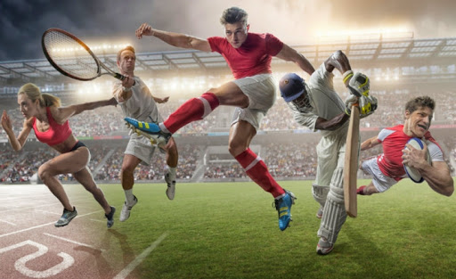

El deporte es una actividad reglamentada, normalmente de carácter competitivo y que puede mejorar la condición física de quien lo practica, y además tiene propiedades que lo diferencian del juego.
La Real Academia Española, en su Diccionario de la lengua española, define deporte como una «actividad física, ejercida como juego o competición, cuya práctica supone entrenamiento y sujeción a normas; también, en una segunda acepción, más amplia, como «recreación, pasatiempo, placer, diversión o ejercicio físico, por lo común al aire libre Por otra parte, la Carta Europea del deporte lo define como: «Todas las formas de actividades físicas que mediante una participación organizada o no, tienen como objetivo la expresión o la mejora de la condición física y psíquica, el desarrollo de las relaciones sociales o la obtención de resultados en competición de todos los niveles.
Institucionalmente, para que una actividad sea considerada deporte, debe estar avalada por estructuras administrativas y de control que se encargan de reglamentarlo (las organizaciones deportivas. El hecho de que alguna actividad no esté reconocida institucionalmente como deporte, no impide que pueda estarlo popularmente, como ocurre con el deporte rural o con los deportes alternativos.

Tipos de deportes
Los deportes pueden clasificarse de muchas formas, ya que son muy numerosos y variados. Lo mejor, en ese sentido es agruparlos en categorías específicas, como:
Deportes acuáticos: Aquellos que se llevan a cabo en cuerpos de agua, generalmente piscinas de ambiente controlado. Por ejemplo: el waterpolo, el nado sincronizado, la natación, la apnea.
Deportes de equipo: Aquellos que requieren de la organización de un equipo de varias personas, con puestos asignados y roles más o menos estrictos, para poder jugarse. Por ejemplo: el baile coreográfico, el canotaje.
Deportes de motor: Aquellos que requieren del uso de algún tipo de vehículo motorizado, en tierra, agua o aire. Por ejemplo: el motocross, el automovilismo, el karting.
Deportes de mesa: Aquellos que deben jugarse sobre una mesa o una superficie estática debidamente preparada. Por ejemplo: el billar, el ping-pong, el pool.
Deportes extremos: Aquellos en los que el deportista se somete a situaciones de riesgo físico y corre peligro. Como el alpinismo, el paracaidismo, el surf y el bungee.
Deportes de pelota: Aquellos que emplean diversos tipos de balones, pelotas o bolas para jugar. Por ejemplo: el tenis, el fútbol, el básquetbol, el rugby, el béisbol.
Deportes mentales: Aquellos en los que la mente y no el cuerpo realizan el esfuerzo. Por ejemplo: el ajedrez, las damas, el Go y el Bridge.